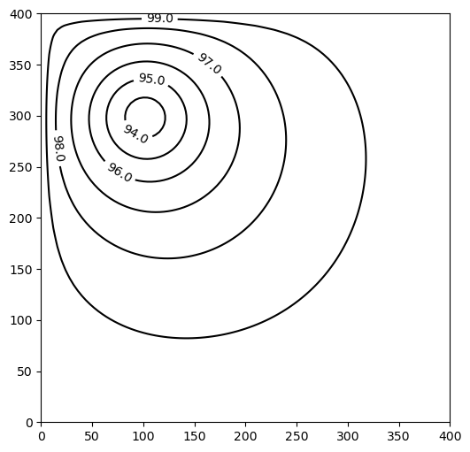
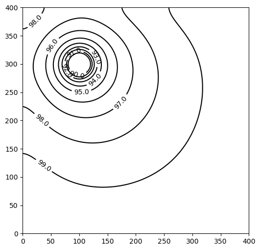
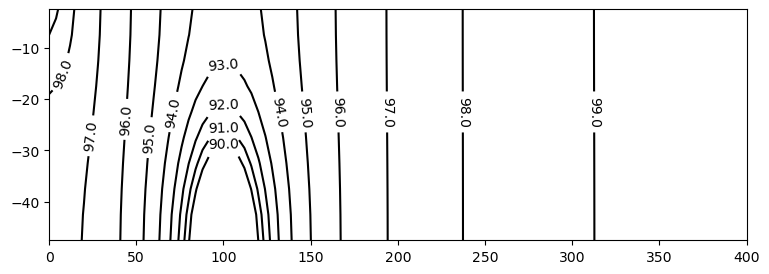
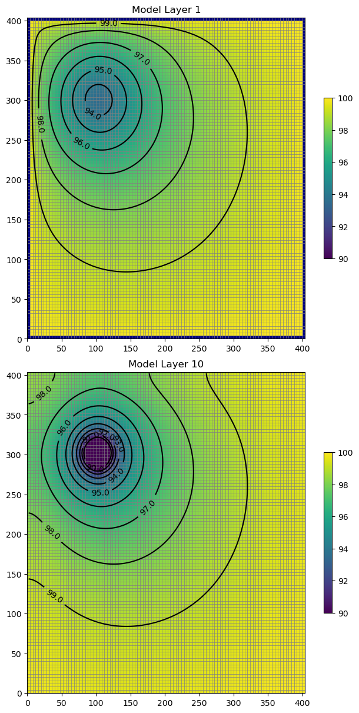
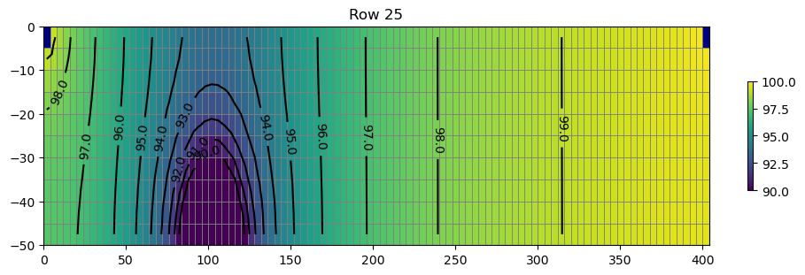
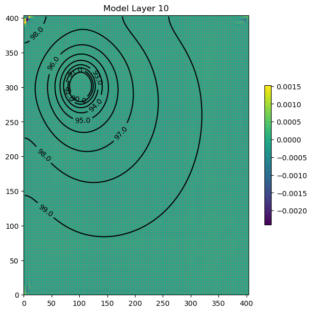

Note
MODFLOW 6 Tutorial 1: Unconfined Steady-State Flow Model
This tutorial demonstrates use of FloPy to develop a simple MODFLOW 6 model.
Getting Started
[1]:
from pathlib import Path
from tempfile import TemporaryDirectory
[2]:
import matplotlib.pyplot as plt
import numpy as np
[3]:
import flopy
We are creating a square model with a specified head equal to h1 along the edge of the model in layer 1. A well is located in the center of the upper-left quadrant in layer 10. First, set the name of the model and the parameters of the model: the number of layers Nlay, the number of rows and columns N, lengths of the sides of the model L, aquifer thickness H, hydraulic conductivity k, and the well pumping rate q.
[4]:
h1 = 100
Nlay = 10
N = 101
L = 400.0
H = 50.0
k = 1.0
q = -1000.0
Create the Flopy Model Objects
One big difference between MODFLOW 6 and previous MODFLOW versions is that MODFLOW 6 is based on the concept of a simulation. A simulation consists of the following:
Temporal discretization (
TDIS)One or more models
Zero or more exchanges (instructions for how models are coupled)
Solutions
For this simple example, the simulation consists of the temporal discretization (TDIS) package, a groundwater flow (GWF) model, and an iterative model solution (IMS), which controls how the GWF model is solved.
Create a temporary workspace, then the FloPy simulation object
[5]:
temp_dir = TemporaryDirectory()
workspace = Path(temp_dir.name)
name = "tutorial01_mf6"
sim = flopy.mf6.MFSimulation(
sim_name=name, exe_name="mf6", version="mf6", sim_ws=workspace
)
Create the Flopy TDIS object
[6]:
tdis = flopy.mf6.ModflowTdis(
sim, pname="tdis", time_units="DAYS", nper=1, perioddata=[(1.0, 1, 1.0)]
)
Create the Flopy IMS Package object
[7]:
ims = flopy.mf6.ModflowIms(
sim,
pname="ims",
complexity="SIMPLE",
linear_acceleration="BICGSTAB",
)
Create the Flopy groundwater flow (gwf) model object
[8]:
model_nam_file = f"{name}.nam"
gwf = flopy.mf6.ModflowGwf(
sim,
modelname=name,
model_nam_file=model_nam_file,
save_flows=True,
newtonoptions="NEWTON UNDER_RELAXATION",
)
Now that the overall simulation is set up, we can focus on building the groundwater flow model. The groundwater flow model will be built by adding packages to it that describe the model characteristics.
Create the discretization (DIS) Package
Define the discretization of the model. All layers are given equal thickness. The bot array is build from H and the Nlay values to indicate top and bottom of each layer, and delrow and delcol are computed from model size L and number of cells N. Once these are all computed, the Discretization file is built.
[9]:
bot = np.linspace(-H / Nlay, -H, Nlay)
delrow = delcol = L / (N - 1)
dis = flopy.mf6.ModflowGwfdis(
gwf,
nlay=Nlay,
nrow=N,
ncol=N,
delr=delrow,
delc=delcol,
top=0.0,
botm=bot,
)
Create the initial conditions (IC) Package
[10]:
start = h1 * np.ones((Nlay, N, N))
ic = flopy.mf6.ModflowGwfic(gwf, pname="ic", strt=start)
Create the node property flow (NPF) Package
[11]:
npf = flopy.mf6.ModflowGwfnpf(
gwf,
icelltype=1,
k=k,
)
Create the constant head (CHD) Package
List information is created a bit differently for MODFLOW 6 than for other MODFLOW versions. The cellid (layer, row, column, for a regular grid) can be entered as a tuple as the first entry. Remember that these must be zero-based indices!
[12]:
chd_rec = []
layer = 0
for row_col in range(0, N):
chd_rec.append(((layer, row_col, 0), h1))
chd_rec.append(((layer, row_col, N - 1), h1))
if row_col != 0 and row_col != N - 1:
chd_rec.append(((layer, 0, row_col), h1))
chd_rec.append(((layer, N - 1, row_col), h1))
chd = flopy.mf6.ModflowGwfchd(
gwf,
stress_period_data=chd_rec,
)
The CHD Package stored the constant heads in a structured array, also called a numpy.recarray. We can get a pointer to the recarray for the first stress period (iper = 0) as follows.
[13]:
iper = 0
ra = chd.stress_period_data.get_data(key=iper)
ra
[13]:
rec.array([((0, 0, 0), 100.), ((0, 0, 100), 100.), ((0, 1, 0), 100.),
((0, 1, 100), 100.), ((0, 0, 1), 100.), ((0, 100, 1), 100.),
((0, 2, 0), 100.), ((0, 2, 100), 100.), ((0, 0, 2), 100.),
((0, 100, 2), 100.), ((0, 3, 0), 100.), ((0, 3, 100), 100.),
((0, 0, 3), 100.), ((0, 100, 3), 100.), ((0, 4, 0), 100.),
((0, 4, 100), 100.), ((0, 0, 4), 100.), ((0, 100, 4), 100.),
((0, 5, 0), 100.), ((0, 5, 100), 100.), ((0, 0, 5), 100.),
((0, 100, 5), 100.), ((0, 6, 0), 100.), ((0, 6, 100), 100.),
((0, 0, 6), 100.), ((0, 100, 6), 100.), ((0, 7, 0), 100.),
((0, 7, 100), 100.), ((0, 0, 7), 100.), ((0, 100, 7), 100.),
((0, 8, 0), 100.), ((0, 8, 100), 100.), ((0, 0, 8), 100.),
((0, 100, 8), 100.), ((0, 9, 0), 100.), ((0, 9, 100), 100.),
((0, 0, 9), 100.), ((0, 100, 9), 100.), ((0, 10, 0), 100.),
((0, 10, 100), 100.), ((0, 0, 10), 100.), ((0, 100, 10), 100.),
((0, 11, 0), 100.), ((0, 11, 100), 100.), ((0, 0, 11), 100.),
((0, 100, 11), 100.), ((0, 12, 0), 100.), ((0, 12, 100), 100.),
((0, 0, 12), 100.), ((0, 100, 12), 100.), ((0, 13, 0), 100.),
((0, 13, 100), 100.), ((0, 0, 13), 100.), ((0, 100, 13), 100.),
((0, 14, 0), 100.), ((0, 14, 100), 100.), ((0, 0, 14), 100.),
((0, 100, 14), 100.), ((0, 15, 0), 100.), ((0, 15, 100), 100.),
((0, 0, 15), 100.), ((0, 100, 15), 100.), ((0, 16, 0), 100.),
((0, 16, 100), 100.), ((0, 0, 16), 100.), ((0, 100, 16), 100.),
((0, 17, 0), 100.), ((0, 17, 100), 100.), ((0, 0, 17), 100.),
((0, 100, 17), 100.), ((0, 18, 0), 100.), ((0, 18, 100), 100.),
((0, 0, 18), 100.), ((0, 100, 18), 100.), ((0, 19, 0), 100.),
((0, 19, 100), 100.), ((0, 0, 19), 100.), ((0, 100, 19), 100.),
((0, 20, 0), 100.), ((0, 20, 100), 100.), ((0, 0, 20), 100.),
((0, 100, 20), 100.), ((0, 21, 0), 100.), ((0, 21, 100), 100.),
((0, 0, 21), 100.), ((0, 100, 21), 100.), ((0, 22, 0), 100.),
((0, 22, 100), 100.), ((0, 0, 22), 100.), ((0, 100, 22), 100.),
((0, 23, 0), 100.), ((0, 23, 100), 100.), ((0, 0, 23), 100.),
((0, 100, 23), 100.), ((0, 24, 0), 100.), ((0, 24, 100), 100.),
((0, 0, 24), 100.), ((0, 100, 24), 100.), ((0, 25, 0), 100.),
((0, 25, 100), 100.), ((0, 0, 25), 100.), ((0, 100, 25), 100.),
((0, 26, 0), 100.), ((0, 26, 100), 100.), ((0, 0, 26), 100.),
((0, 100, 26), 100.), ((0, 27, 0), 100.), ((0, 27, 100), 100.),
((0, 0, 27), 100.), ((0, 100, 27), 100.), ((0, 28, 0), 100.),
((0, 28, 100), 100.), ((0, 0, 28), 100.), ((0, 100, 28), 100.),
((0, 29, 0), 100.), ((0, 29, 100), 100.), ((0, 0, 29), 100.),
((0, 100, 29), 100.), ((0, 30, 0), 100.), ((0, 30, 100), 100.),
((0, 0, 30), 100.), ((0, 100, 30), 100.), ((0, 31, 0), 100.),
((0, 31, 100), 100.), ((0, 0, 31), 100.), ((0, 100, 31), 100.),
((0, 32, 0), 100.), ((0, 32, 100), 100.), ((0, 0, 32), 100.),
((0, 100, 32), 100.), ((0, 33, 0), 100.), ((0, 33, 100), 100.),
((0, 0, 33), 100.), ((0, 100, 33), 100.), ((0, 34, 0), 100.),
((0, 34, 100), 100.), ((0, 0, 34), 100.), ((0, 100, 34), 100.),
((0, 35, 0), 100.), ((0, 35, 100), 100.), ((0, 0, 35), 100.),
((0, 100, 35), 100.), ((0, 36, 0), 100.), ((0, 36, 100), 100.),
((0, 0, 36), 100.), ((0, 100, 36), 100.), ((0, 37, 0), 100.),
((0, 37, 100), 100.), ((0, 0, 37), 100.), ((0, 100, 37), 100.),
((0, 38, 0), 100.), ((0, 38, 100), 100.), ((0, 0, 38), 100.),
((0, 100, 38), 100.), ((0, 39, 0), 100.), ((0, 39, 100), 100.),
((0, 0, 39), 100.), ((0, 100, 39), 100.), ((0, 40, 0), 100.),
((0, 40, 100), 100.), ((0, 0, 40), 100.), ((0, 100, 40), 100.),
((0, 41, 0), 100.), ((0, 41, 100), 100.), ((0, 0, 41), 100.),
((0, 100, 41), 100.), ((0, 42, 0), 100.), ((0, 42, 100), 100.),
((0, 0, 42), 100.), ((0, 100, 42), 100.), ((0, 43, 0), 100.),
((0, 43, 100), 100.), ((0, 0, 43), 100.), ((0, 100, 43), 100.),
((0, 44, 0), 100.), ((0, 44, 100), 100.), ((0, 0, 44), 100.),
((0, 100, 44), 100.), ((0, 45, 0), 100.), ((0, 45, 100), 100.),
((0, 0, 45), 100.), ((0, 100, 45), 100.), ((0, 46, 0), 100.),
((0, 46, 100), 100.), ((0, 0, 46), 100.), ((0, 100, 46), 100.),
((0, 47, 0), 100.), ((0, 47, 100), 100.), ((0, 0, 47), 100.),
((0, 100, 47), 100.), ((0, 48, 0), 100.), ((0, 48, 100), 100.),
((0, 0, 48), 100.), ((0, 100, 48), 100.), ((0, 49, 0), 100.),
((0, 49, 100), 100.), ((0, 0, 49), 100.), ((0, 100, 49), 100.),
((0, 50, 0), 100.), ((0, 50, 100), 100.), ((0, 0, 50), 100.),
((0, 100, 50), 100.), ((0, 51, 0), 100.), ((0, 51, 100), 100.),
((0, 0, 51), 100.), ((0, 100, 51), 100.), ((0, 52, 0), 100.),
((0, 52, 100), 100.), ((0, 0, 52), 100.), ((0, 100, 52), 100.),
((0, 53, 0), 100.), ((0, 53, 100), 100.), ((0, 0, 53), 100.),
((0, 100, 53), 100.), ((0, 54, 0), 100.), ((0, 54, 100), 100.),
((0, 0, 54), 100.), ((0, 100, 54), 100.), ((0, 55, 0), 100.),
((0, 55, 100), 100.), ((0, 0, 55), 100.), ((0, 100, 55), 100.),
((0, 56, 0), 100.), ((0, 56, 100), 100.), ((0, 0, 56), 100.),
((0, 100, 56), 100.), ((0, 57, 0), 100.), ((0, 57, 100), 100.),
((0, 0, 57), 100.), ((0, 100, 57), 100.), ((0, 58, 0), 100.),
((0, 58, 100), 100.), ((0, 0, 58), 100.), ((0, 100, 58), 100.),
((0, 59, 0), 100.), ((0, 59, 100), 100.), ((0, 0, 59), 100.),
((0, 100, 59), 100.), ((0, 60, 0), 100.), ((0, 60, 100), 100.),
((0, 0, 60), 100.), ((0, 100, 60), 100.), ((0, 61, 0), 100.),
((0, 61, 100), 100.), ((0, 0, 61), 100.), ((0, 100, 61), 100.),
((0, 62, 0), 100.), ((0, 62, 100), 100.), ((0, 0, 62), 100.),
((0, 100, 62), 100.), ((0, 63, 0), 100.), ((0, 63, 100), 100.),
((0, 0, 63), 100.), ((0, 100, 63), 100.), ((0, 64, 0), 100.),
((0, 64, 100), 100.), ((0, 0, 64), 100.), ((0, 100, 64), 100.),
((0, 65, 0), 100.), ((0, 65, 100), 100.), ((0, 0, 65), 100.),
((0, 100, 65), 100.), ((0, 66, 0), 100.), ((0, 66, 100), 100.),
((0, 0, 66), 100.), ((0, 100, 66), 100.), ((0, 67, 0), 100.),
((0, 67, 100), 100.), ((0, 0, 67), 100.), ((0, 100, 67), 100.),
((0, 68, 0), 100.), ((0, 68, 100), 100.), ((0, 0, 68), 100.),
((0, 100, 68), 100.), ((0, 69, 0), 100.), ((0, 69, 100), 100.),
((0, 0, 69), 100.), ((0, 100, 69), 100.), ((0, 70, 0), 100.),
((0, 70, 100), 100.), ((0, 0, 70), 100.), ((0, 100, 70), 100.),
((0, 71, 0), 100.), ((0, 71, 100), 100.), ((0, 0, 71), 100.),
((0, 100, 71), 100.), ((0, 72, 0), 100.), ((0, 72, 100), 100.),
((0, 0, 72), 100.), ((0, 100, 72), 100.), ((0, 73, 0), 100.),
((0, 73, 100), 100.), ((0, 0, 73), 100.), ((0, 100, 73), 100.),
((0, 74, 0), 100.), ((0, 74, 100), 100.), ((0, 0, 74), 100.),
((0, 100, 74), 100.), ((0, 75, 0), 100.), ((0, 75, 100), 100.),
((0, 0, 75), 100.), ((0, 100, 75), 100.), ((0, 76, 0), 100.),
((0, 76, 100), 100.), ((0, 0, 76), 100.), ((0, 100, 76), 100.),
((0, 77, 0), 100.), ((0, 77, 100), 100.), ((0, 0, 77), 100.),
((0, 100, 77), 100.), ((0, 78, 0), 100.), ((0, 78, 100), 100.),
((0, 0, 78), 100.), ((0, 100, 78), 100.), ((0, 79, 0), 100.),
((0, 79, 100), 100.), ((0, 0, 79), 100.), ((0, 100, 79), 100.),
((0, 80, 0), 100.), ((0, 80, 100), 100.), ((0, 0, 80), 100.),
((0, 100, 80), 100.), ((0, 81, 0), 100.), ((0, 81, 100), 100.),
((0, 0, 81), 100.), ((0, 100, 81), 100.), ((0, 82, 0), 100.),
((0, 82, 100), 100.), ((0, 0, 82), 100.), ((0, 100, 82), 100.),
((0, 83, 0), 100.), ((0, 83, 100), 100.), ((0, 0, 83), 100.),
((0, 100, 83), 100.), ((0, 84, 0), 100.), ((0, 84, 100), 100.),
((0, 0, 84), 100.), ((0, 100, 84), 100.), ((0, 85, 0), 100.),
((0, 85, 100), 100.), ((0, 0, 85), 100.), ((0, 100, 85), 100.),
((0, 86, 0), 100.), ((0, 86, 100), 100.), ((0, 0, 86), 100.),
((0, 100, 86), 100.), ((0, 87, 0), 100.), ((0, 87, 100), 100.),
((0, 0, 87), 100.), ((0, 100, 87), 100.), ((0, 88, 0), 100.),
((0, 88, 100), 100.), ((0, 0, 88), 100.), ((0, 100, 88), 100.),
((0, 89, 0), 100.), ((0, 89, 100), 100.), ((0, 0, 89), 100.),
((0, 100, 89), 100.), ((0, 90, 0), 100.), ((0, 90, 100), 100.),
((0, 0, 90), 100.), ((0, 100, 90), 100.), ((0, 91, 0), 100.),
((0, 91, 100), 100.), ((0, 0, 91), 100.), ((0, 100, 91), 100.),
((0, 92, 0), 100.), ((0, 92, 100), 100.), ((0, 0, 92), 100.),
((0, 100, 92), 100.), ((0, 93, 0), 100.), ((0, 93, 100), 100.),
((0, 0, 93), 100.), ((0, 100, 93), 100.), ((0, 94, 0), 100.),
((0, 94, 100), 100.), ((0, 0, 94), 100.), ((0, 100, 94), 100.),
((0, 95, 0), 100.), ((0, 95, 100), 100.), ((0, 0, 95), 100.),
((0, 100, 95), 100.), ((0, 96, 0), 100.), ((0, 96, 100), 100.),
((0, 0, 96), 100.), ((0, 100, 96), 100.), ((0, 97, 0), 100.),
((0, 97, 100), 100.), ((0, 0, 97), 100.), ((0, 100, 97), 100.),
((0, 98, 0), 100.), ((0, 98, 100), 100.), ((0, 0, 98), 100.),
((0, 100, 98), 100.), ((0, 99, 0), 100.), ((0, 99, 100), 100.),
((0, 0, 99), 100.), ((0, 100, 99), 100.), ((0, 100, 0), 100.),
((0, 100, 100), 100.)],
dtype=[('cellid', 'O'), ('head', '<f8')])
Create the well (WEL) Package
Add a well in model layer 10.
[14]:
wel_rec = [(Nlay - 1, int(N / 4), int(N / 4), q)]
wel = flopy.mf6.ModflowGwfwel(
gwf,
stress_period_data=wel_rec,
)
Create the output control (OC) Package
Save heads and budget output to binary files and print heads to the model listing file at the end of the stress period.
[15]:
headfile = f"{name}.hds"
head_filerecord = [headfile]
budgetfile = f"{name}.cbb"
budget_filerecord = [budgetfile]
saverecord = [("HEAD", "ALL"), ("BUDGET", "ALL")]
printrecord = [("HEAD", "LAST")]
oc = flopy.mf6.ModflowGwfoc(
gwf,
saverecord=saverecord,
head_filerecord=head_filerecord,
budget_filerecord=budget_filerecord,
printrecord=printrecord,
)
Create the MODFLOW 6 Input Files and Run the Model
Once all the flopy objects are created, it is very easy to create all of the input files and run the model.
Write the datasets
[16]:
sim.write_simulation()
writing simulation...
writing simulation name file...
writing simulation tdis package...
writing solution package ims...
writing model tutorial01_mf6...
writing model name file...
writing package dis...
writing package ic...
writing package npf...
writing package chd_0...
INFORMATION: maxbound in ('gwf6', 'chd', 'dimensions') changed to 400 based on size of stress_period_data
writing package wel_0...
INFORMATION: maxbound in ('gwf6', 'wel', 'dimensions') changed to 1 based on size of stress_period_data
writing package oc...
Run the Simulation
We can also run the simulation from python, but only if the MODFLOW 6 executable is available. The executable can be made available by putting the executable in a folder that is listed in the system path variable. Another option is to just put a copy of the executable in the simulation folder, though this should generally be avoided. A final option is to provide a full path to the executable when the simulation is constructed. This would be done by specifying exe_name with the full path.
[17]:
success, buff = sim.run_simulation()
assert success, "MODFLOW 6 did not terminate normally."
FloPy is using the following executable to run the model: ../../home/runner/.local/bin/modflow/mf6
MODFLOW 6
U.S. GEOLOGICAL SURVEY MODULAR HYDROLOGIC MODEL
VERSION 6.4.1 Release 12/09/2022
MODFLOW 6 compiled Apr 12 2023 19:02:29 with Intel(R) Fortran Intel(R) 64
Compiler Classic for applications running on Intel(R) 64, Version 2021.7.0
Build 20220726_000000
This software has been approved for release by the U.S. Geological
Survey (USGS). Although the software has been subjected to rigorous
review, the USGS reserves the right to update the software as needed
pursuant to further analysis and review. No warranty, expressed or
implied, is made by the USGS or the U.S. Government as to the
functionality of the software and related material nor shall the
fact of release constitute any such warranty. Furthermore, the
software is released on condition that neither the USGS nor the U.S.
Government shall be held liable for any damages resulting from its
authorized or unauthorized use. Also refer to the USGS Water
Resources Software User Rights Notice for complete use, copyright,
and distribution information.
Run start date and time (yyyy/mm/dd hh:mm:ss): 2023/05/04 15:50:33
Writing simulation list file: mfsim.lst
Using Simulation name file: mfsim.nam
Solving: Stress period: 1 Time step: 1
Run end date and time (yyyy/mm/dd hh:mm:ss): 2023/05/04 15:50:35
Elapsed run time: 1.923 Seconds
Normal termination of simulation.
Post-Process Head Results
First, a link to the heads file is created with using the .output.head() method on the groundwater flow model. The link and the get_data method are used with the step number and period number for which we want to retrieve data. A three-dimensional array is returned of size nlay, nrow, ncol. Matplotlib contouring functions are used to make contours of the layers or a cross-section.
Read the binary head file and plot the results. We can use the Flopy .output.head() method on the groundwater flow model object (gwf). Also set a few variables that will be used for plotting.
[18]:
h = gwf.output.head().get_data(kstpkper=(0, 0))
x = y = np.linspace(0, L, N)
y = y[::-1]
vmin, vmax = 90.0, 100.0
contour_intervals = np.arange(90, 100.1, 1.0)
Plot a Map of Layer 1
[19]:
fig = plt.figure(figsize=(6, 6))
ax = fig.add_subplot(1, 1, 1, aspect="equal")
c = ax.contour(x, y, h[0], contour_intervals, colors="black")
plt.clabel(c, fmt="%2.1f")
[19]:
<a list of 6 text.Text objects>

Plot a Map of Layer 10
[20]:
x = y = np.linspace(0, L, N)
y = y[::-1]
fig = plt.figure(figsize=(6, 6))
ax = fig.add_subplot(1, 1, 1, aspect="equal")
c = ax.contour(x, y, h[-1], contour_intervals, colors="black")
plt.clabel(c, fmt="%1.1f")
[20]:
<a list of 11 text.Text objects>

Plot a Cross-section along row 25
[21]:
z = np.linspace(-H / Nlay / 2, -H + H / Nlay / 2, Nlay)
fig = plt.figure(figsize=(9, 3))
ax = fig.add_subplot(1, 1, 1, aspect="auto")
c = ax.contour(x, z, h[:, int(N / 4), :], contour_intervals, colors="black")
plt.clabel(c, fmt="%1.1f")
[21]:
<a list of 15 text.Text objects>

Use the FloPy PlotMapView() capabilities for MODFLOW 6
Plot a Map of heads in Layers 1 and 10
[22]:
fig, axes = plt.subplots(2, 1, figsize=(6, 12), constrained_layout=True)
# first subplot
ax = axes[0]
ax.set_title("Model Layer 1")
modelmap = flopy.plot.PlotMapView(model=gwf, ax=ax)
pa = modelmap.plot_array(h, vmin=vmin, vmax=vmax)
quadmesh = modelmap.plot_bc("CHD")
linecollection = modelmap.plot_grid(lw=0.5, color="0.5")
contours = modelmap.contour_array(
h,
levels=contour_intervals,
colors="black",
)
ax.clabel(contours, fmt="%2.1f")
cb = plt.colorbar(pa, shrink=0.5, ax=ax)
# second subplot
ax = axes[1]
ax.set_title(f"Model Layer {Nlay}")
modelmap = flopy.plot.PlotMapView(model=gwf, ax=ax, layer=Nlay - 1)
linecollection = modelmap.plot_grid(lw=0.5, color="0.5")
pa = modelmap.plot_array(h, vmin=vmin, vmax=vmax)
quadmesh = modelmap.plot_bc("CHD")
contours = modelmap.contour_array(
h,
levels=contour_intervals,
colors="black",
)
ax.clabel(contours, fmt="%2.1f")
cb = plt.colorbar(pa, shrink=0.5, ax=ax)

Use the FloPy PlotCrossSection() capabilities for MODFLOW 6
Plot a cross-section of heads along row 25
[23]:
fig, ax = plt.subplots(1, 1, figsize=(9, 3), constrained_layout=True)
# first subplot
ax.set_title("Row 25")
modelmap = flopy.plot.PlotCrossSection(
model=gwf,
ax=ax,
line={"row": int(N / 4)},
)
pa = modelmap.plot_array(h, vmin=vmin, vmax=vmax)
quadmesh = modelmap.plot_bc("CHD")
linecollection = modelmap.plot_grid(lw=0.5, color="0.5")
contours = modelmap.contour_array(
h,
levels=contour_intervals,
colors="black",
)
ax.clabel(contours, fmt="%2.1f")
cb = plt.colorbar(pa, shrink=0.5, ax=ax)

Determine the Flow Residual
The FLOW-JA-FACE cell-by-cell budget data can be processed to determine the flow residual for each cell in a MODFLOW 6 model. The diagonal position for each row in the FLOW-JA-FACE cell-by-cell budget data contains the flow residual for each cell and can be extracted using the flopy.mf6.utils.get_residuals() function.
First extract the FLOW-JA-FACE array from the cell-by-cell budget file
[24]:
flowja = gwf.oc.output.budget().get_data(text="FLOW-JA-FACE", kstpkper=(0, 0))[
0
]
Next extract the flow residual. The MODFLOW 6 binary grid file is passed into the function because it contains the ia array that defines the location of the diagonal position in the FLOW-JA-FACE array.
[25]:
grb_file = workspace / f"{name}.dis.grb"
residual = flopy.mf6.utils.get_residuals(flowja, grb_file=grb_file)
Plot a Map of the flow error in Layer 10
[26]:
fig, ax = plt.subplots(1, 1, figsize=(6, 6), constrained_layout=True)
ax.set_title("Model Layer 10")
modelmap = flopy.plot.PlotMapView(model=gwf, ax=ax, layer=Nlay - 1)
pa = modelmap.plot_array(residual)
quadmesh = modelmap.plot_bc("CHD")
linecollection = modelmap.plot_grid(lw=0.5, color="0.5")
contours = modelmap.contour_array(
h,
levels=contour_intervals,
colors="black",
)
ax.clabel(contours, fmt="%2.1f")
plt.colorbar(pa, shrink=0.5)
[26]:
<matplotlib.colorbar.Colorbar at 0x7f0c58331870>

Clean up the temporary directory
[27]:
try:
temp_dir.cleanup()
except PermissionError:
# can occur on windows: https://docs.python.org/3/library/tempfile.html#tempfile.TemporaryDirectory
pass